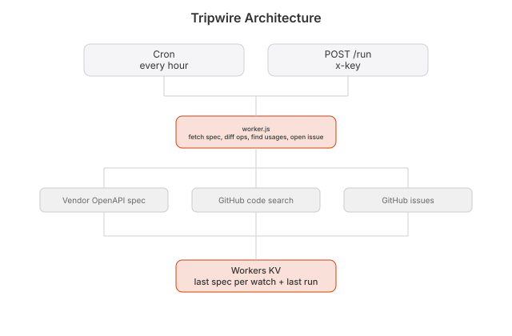

Every API you depend on ships breaking changes whenever it feels like it. Tripwire tells you what broke, in your code, before prod does.
Stripe removed POST /v1/charges, you call it in 3 files
Stripe's OpenAPI spec changed since the last run. This endpoint is gone:
- POST /v1/charges - charges.customer_id + charges.customer
Your calls:
src/billing/checkout.ts:42src/billing/refund.ts:18api/webhooks/stripe.ts:77Stripe renames a field. Some vendor kills an endpoint. You find out when prod 500s at 2am. Changelogs exist. Nobody reads them. The vendor has no idea which customers are even using the thing they just broke.
A worker polls the vendor's OpenAPI spec on a cron and keeps the last version. When it changes, it diffs the two: removed endpoints, dropped params, new required fields. Then it goes into your repo, finds the calls that just got nuked, and opens an issue that says
/v1/charges is gone. You call it in these three files. Here's the diff.That's it. That's the whole product. One file.
A status page tells everyone the same thing. This tells you what broke in your code. The difference between a weather report and someone knocking on your door with an umbrella.

watches.json { name, spec, repo }
GET /api last run
POST /api/run x-key: $RUN_KEY
cron every hour